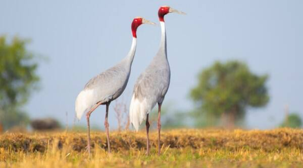

News / Seventh News
|  |
|
Birds Without Borders: In flamingo land of Gujarat, sarus cranes keep singing their love songs
In March this year, the friendship between a farmer and a sarus crane in the Amethi district of
Uttar Pradesh ended rather unusually, with the man booked under the Wildlife (Protection) Act and
the bird packed away to a sanctuary.
The bond between the farmer and the bird, which he had reportedly healed to health after finding it with a broken leg, had hit national headlines and inspired debates over man-bird friendship and wildlife laws in the country. However, sarus cranes’ love for a company goes deeper in the wilderness too. Can you think of a couple who does not stay away from each other even for a moment? A couple for whom the absence of a partner makes them so uncomfortable and even melancholic. That is precisely how the sarus crane (scientific name: Grus antigone) is. In Gujarati, such a couple is often referred to as Sarus beladu. Sarus cranes mate for life — they mate with the same partner every breeding season. Watching a sarus crane pair romancing and getting excited together is astonishing. They dance, jump, pull and play with weeds. The longer the weed, the more the excitement. |